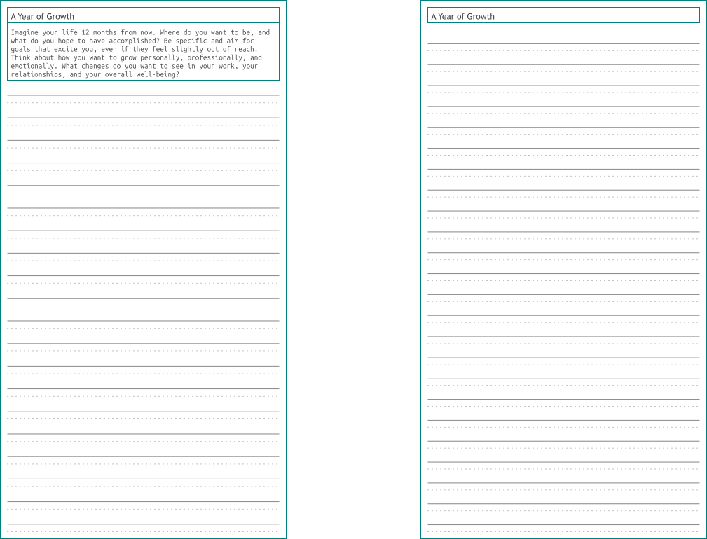
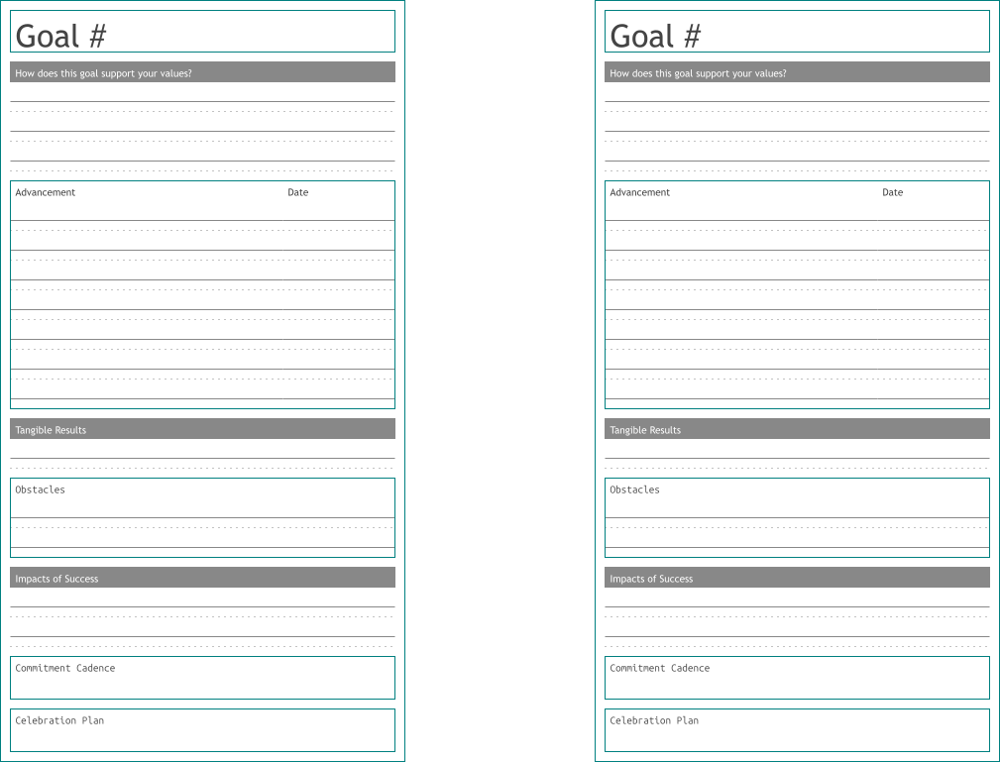
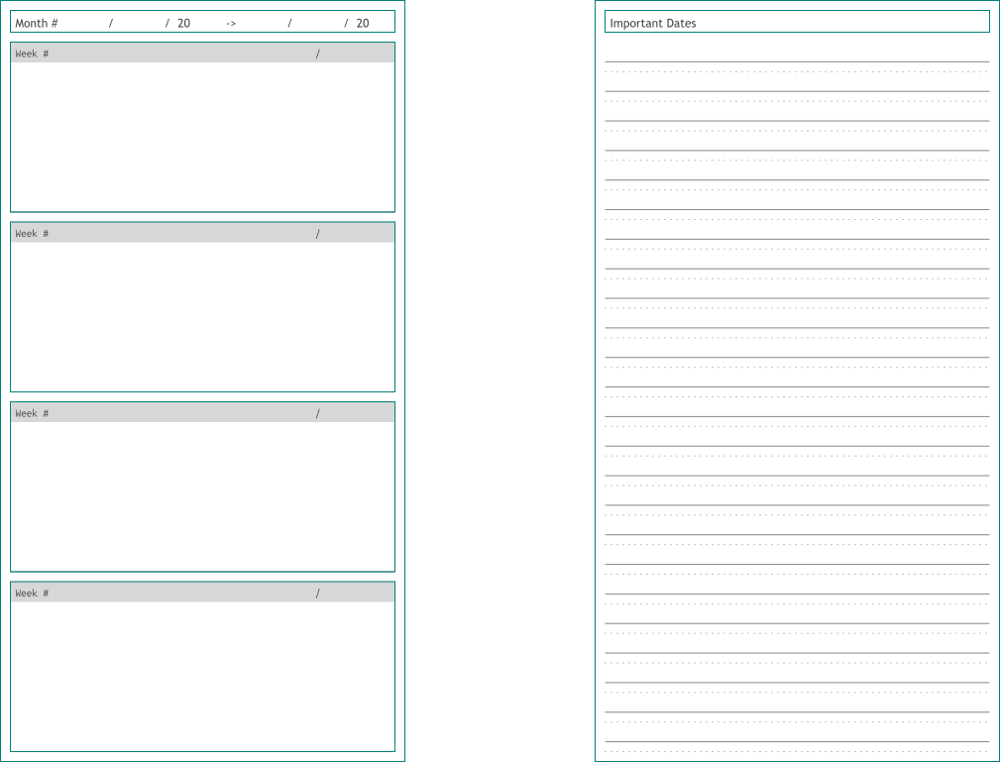
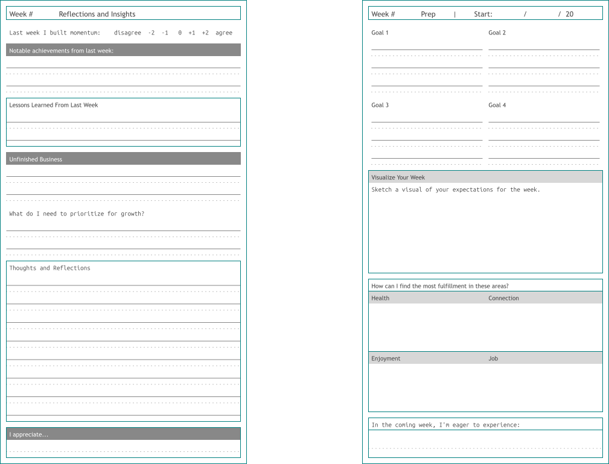
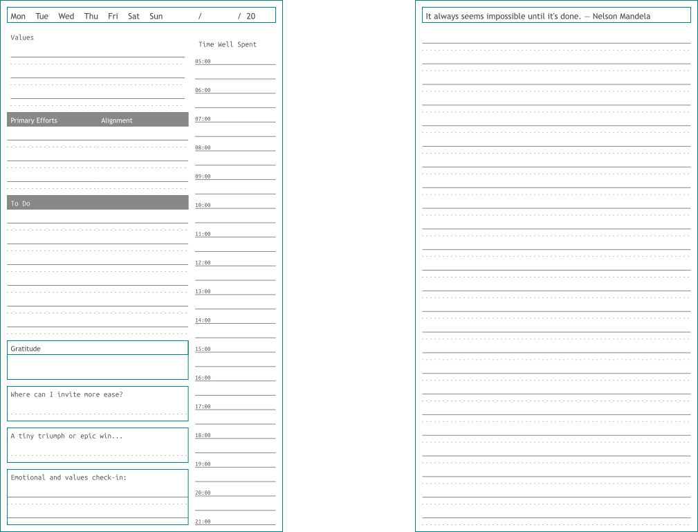
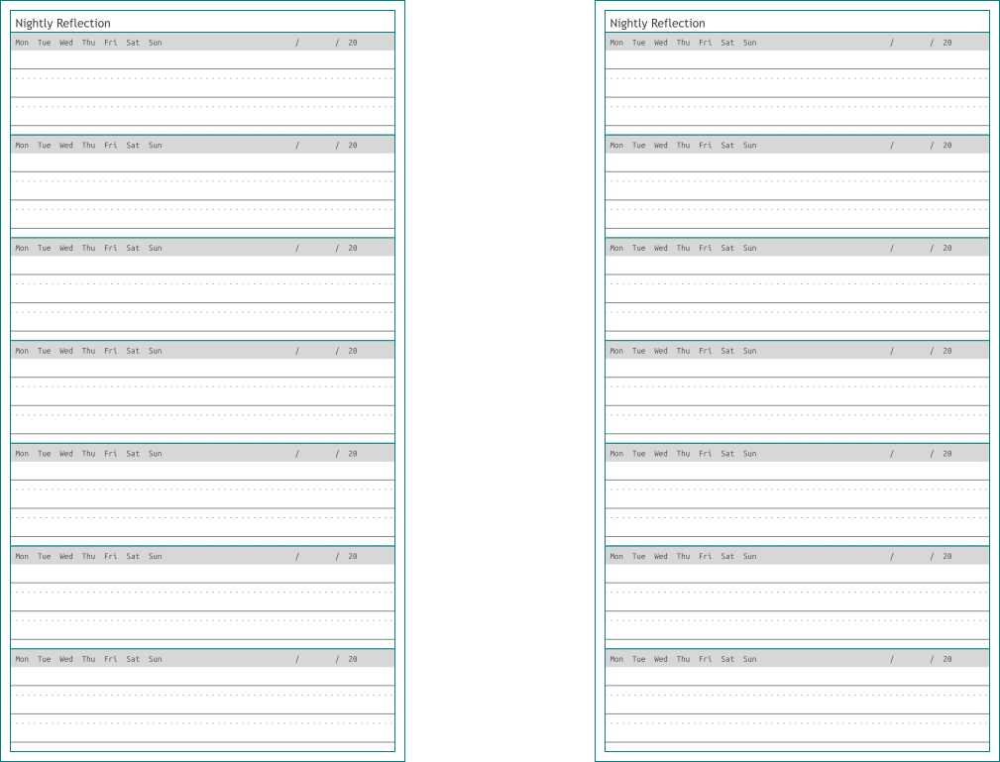
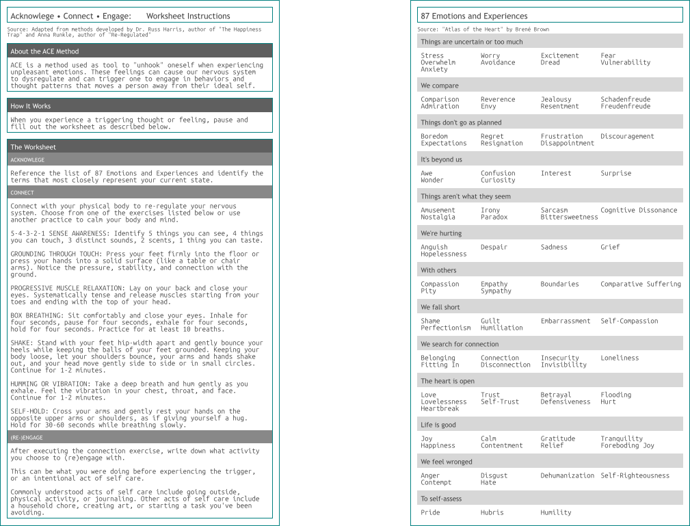
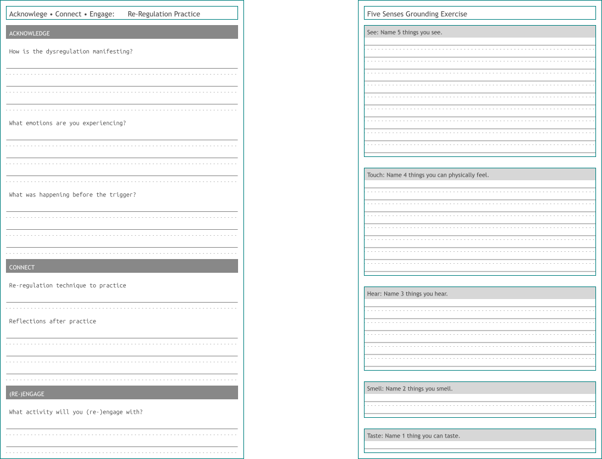

How to Use The Book of Plans
How to fill out planner pages.
This page describes each of the types of pages in The Book of Plans and instructions on how to fill them out.
Sections
This planner has four main sections and optional add-ons to help you practically move toward your ideal self. A full preview of the planner can be found here. Note that this preview is not formatted for printing. For printing and assembly instructions, see this page.
Core Sections
- Vision
- Goals
- Calendar
- Daily and weekly logs
Optional Sections
- Nightly log
- ACE exercise pages
Vision
This section includes prompts and free-write space to help you shape your vision over different time frames, along with a commitment to support your accountability.
Take your time. You might want to complete this section over several days of contemplation. These exercises help you surface what matters most and align your goals with those priorities.

Goals
After completing your responses to your vision, set up to four bold yet realistic goals for the quarter. How can you break down that goal into smaller targets? What are tangible outcomes of reaching the goal? What obstacles to follow through can you anticipate? How often can you commit to working on that goal? How will you celebrate?

Calendar
Use the calendar section however it best supports you, whether for goal targets or noting important dates.

Weekly and Daily Logs
The weekly and daily logs are the core of the planner. Reflect weekly, plan ahead with your goals in mind, and use each day to restate your values, set priorities, and check in with your emotional state.
Weekly Log

Daily Log

Optional Pages
Nightly Log
In this optional section, use the space to write a few sentences about what you did that day, how you felt, or anything else you want to track on a daily basis. I personally keep these pages in a separate notebook that stays on my bedside table.

ACE Exercises
Thoughts and emotions can sometimes interfere with daily life and pull us away from our goals. ACE stands for Accept, Connect, and Re-Engage. It is a simple exercise that helps reduce the intensity of uncomfortable emotions and the dysregulation they can cause. This model is inspired by the work of Russ Harris and Anna Runkle. Use these pages whenever you feel your nervous system is becoming dysregulated.

